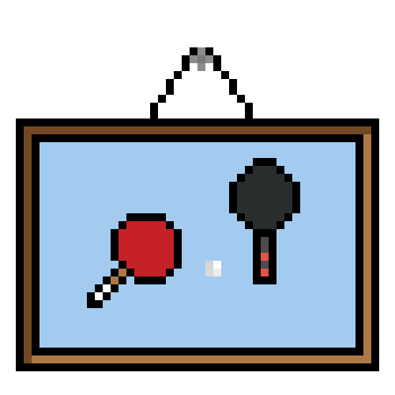

The Past
My Secondary School

Clubs
I'm pretty bad at Table Tennis so I chose it as my CCA to improve. It's far from good but it's getting there!
Favourite Subject
My favorite subject is math. I would have liked to take Computer Science but unfortunately it was not offered.
My Grades
- Here are my O Level results!
- I don't mind showing them and I think it will be really helpful for you to see them!
- Just to give you some idea on how you don't really have to have the best grades to get into SP.
- You don't have to worry about it, what's more important is your passion and love for coding.
| Subject | Grade |
|---|---|
| Chemistry | C4 |
| English Language | A2 |
| Geography | B3 |
| Math | A2 |
| Music | B3 |
| Physics | B3 |